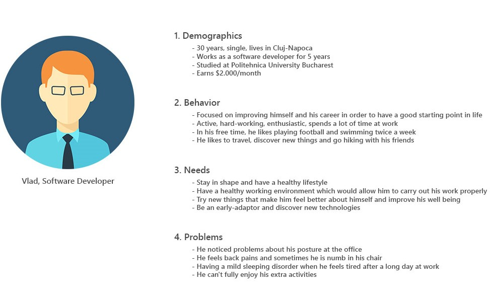
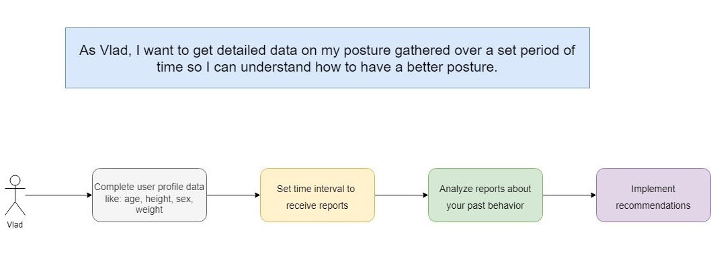
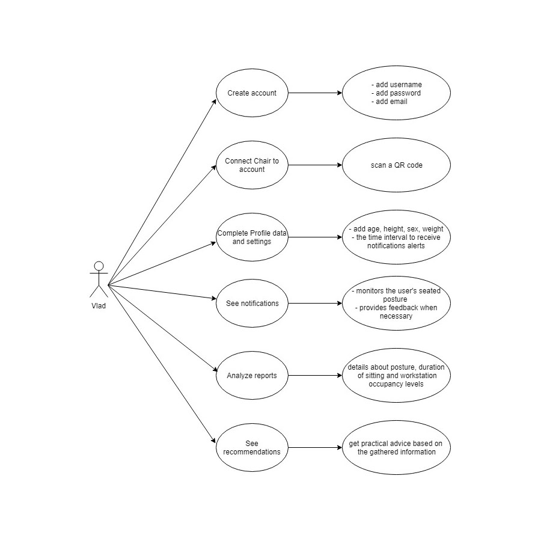

Make your chair smart
The prototype is a chair, embedded with sensors, that alert you when you stay in a wrong position or stay too long in the same position. Coupled with an Android application to show tips and notifications, the device can be used anywhere, at any time.
M1
MYCS
Our Team
Cosmin Prunaru CTO

Crina Elena Popa CMO
Cristi Mares FED
Cristian Mondiru CEO
Problem
Are you aware of your posture? More and more people perform their work sitting down. But the human body is not designed to sit for prolonged periods. Let alone sitting ‘incorrectly’ for long periods.But sadly most people pay far too little attention to this. They often fail to realize sufficiently that health and a proper seated posture are intimately linked. Awareness is frequently gained only after physical problems arise.
Our solution
MYCS monitors the user's seated posture and provides feedback where necessary. Sensors in the seat and back register and record the user's posture. The chair makes the user aware of their posture. This feedback contributes to increasing users' awareness of their seated posture. Ultimately, this means that users go home fitter.
Customer Segment
Our clients are the people who spend a lot of time standing on a chair, at the office, being predisposed to back problems.
Competition
At the moment there are no other similar products on the market, the current level being reached by the seats with the highest degree of comfort.
Advantage
MYCS not only offers high comfort, it provides real-time notifications to help users correct their posture. It also records reports over a fixed amount of time, allowing users to analyze their posture and receive recommendations.
Key metrics
To measure how effectively we are achieving our key business objectives we establish the following key performance indicators (KPI): posture awareness, number of demo calls, product performance, monthly sales growth, sales opportunities.
Cost structure
Major fixed costs include advertising & promotion, software, rent, supplies, materials, transporation, repairs & maintenance, insurance.
Revenue Streams
In order to plan strategy and communicate the revenue streams of our business we thought at the following revenue structure: consumer services, business services, smart insight software, smart cloud, products, advertising.
M2
Problem
With a schedule that forces many people to stay in the same position for hours at a time, back pain has become a common thing nowadays and a serious threat for our health. We noticed the problem by experiencing it. When you are at work, you try to stay in a correct position on the chair, but as you do your tasks you may find out that your position has changed, and very likely not in a good way.
Solution
What if the chair could say to you 'Hey, you are not sitting right. Time for a break!'. By alerting you when necessary, you can focus on what you are doing and stop worrying about your postion. You will chair-ish those moments.
Customer discovery
Our clients are the people who spend a lot of time standing on a chair, at the office, being predisposed to back problems. So we started by asking directly for the opinion of our colleges at work and college, as they are part of our target. We also asked them to help us distribute an online form , by sending it to all of their contacts.
The plan is to target the well known categories that are affected by the problem we are trying to solve and to see if our ideas converge with the potential customers ideas.
The customer discovery process was split in two halves. In the first one we tried to identify more accurately the target categories. We did this by sending online questionnaires to large groups of people belonging to a wide range of occupations. After gathering all the information from the questionnaires we identified the interest groups.
86% of the corporate industry(IT, sales, customer support) respondents, complained about neck and back problems caused by their consistently unhealthy posture at the office or are aware of the dangers of this issue.
Other groups, people that don't use to stay at the office for so long, did not have such conclusive opinions about the regarding problem.
The second phase was going in a more direct conversation with the target group discovered before. After the face-to-face discussions we concluded the followings:
- persons aged 35+ are more prone to back problems that complementary category(55% vs 34%);
- regardless the age, 80% those who spend 8+ hours at the office consider that posture is a factor they should be aware of;
- 75% of the interviewed said that an idea like MYCS is something good and would be glad to have an intelligent chair at their workplace;
- only 30% said that would buy one out of their own incentive;
- after asking those with managerial or administration related work positions, we saw openness. "We would strongly consider such an options" most responded.
The most significant aspect that changed after reaching with the customers was the orientation of the bussiness. A bussiness-to-bussiness strategy looks like the best approach due to responses that we got.
M4
Interview questions
- How many hours a day do you sit in the office chair?
- What are the disadvantages of this aspect?
- Do you think you have a proper position?
- How do you evaluate this?
- How does that affect you?
- What measures have you taken so far?
- What do you think could be a solution to this problem?
- You see any disadvantage in this solution?
- On a scale of 1 to 10, how important is finding a solution to this problem?
- What benefits do you think would bring you?
- What do you think of our action of promoting posture awareness?
- How do you think we could reach a bigger audience?
User persona
User stories
As Vlad, I want to receive notifications in real-time about my sitting habits, so that I can monitor and correct my posture.
As Vlad, I want to get detailed data on my posture gathered over a set period of time so I can understand how to have a better posture.
User flows
Use cases
M5
M6
Competition
At this time, the competition is mostly made from new-born projects. Projects that are in their earliest stage and that even though present the same ideea, are different in many aspects. Surpassing the competitons will need strategic analysis on the target market, on how and when to lauch ad campains, how to manage the development phase and how to balance the finances. The risk of not surpassing the competition must be considered, and even in a scenario when MYCS is not leading the market for the first 3 years, giving the potentially small number of players, the market share looks promising enough.
M7
Creating the MVP
Architecture
Due to complex requirements of the software, we decided to use UDOO Neo board, running a simplified Linux distribution.
Initial value
After we managed to get some more validation and we decided that we found a real problem and the fact that people would like to use our product, we set the first phase targets as:
- monitoring back position while sitting on chair
- provide live feedback
- provide some advices based on datas that we gathered
Workflow
The user just have to place the monitoring device on their chair, as we promised in the early stages.
After the device is on, user can receive live statistics for his position in the chair and can get reports of which zones he is pressuring the most. Some advices to repair his position are provided as we noticed from previous validation. The video below is a demo of UX and UI.
Being an MVP the project is in the alpha phase yet, not so good looking but we managed to get some early adapters using it for a while and even got some donations and feedback for future development.
We have implemented the core features and in the future we plan to redesign the UI and the UX, making our application more friendly and available on iOS and Android.
On the landing page and on the Fiki page we also have the feedback from continuous feedback loop so that the users could send us their dissatisfaction if any, or possible upgrades and features that they may want to try. We receive feedback on e-mail and on the Hotjar monitorization tool.
User sending feedback.
Feedback is received via email or facebook.
M8
First Sale
We started presenting our product within the university and various companies, especially IT, to which we had access through friends and acquaintances. They all are part of our target, being people who spend more than 7 hours a day sitting on a chair. In addition, they are passionate about technology and anything that could make life easier. This approach was a good one because we received a lot of feedback, ways by which we can improve our product and also 70% of the participants were interested in getting a demo for a set amount of time, while another 8% were willing to buy directly. So, we offered each of the interested companies with a free demo product for a month so employees can test it during break times. We also followed the relevant events taking place around us and we tried to expose our product at the ones that seemed most promising, alternatively going to bigger events as attendees.
We also contacted niche blogs, which are addressing lifestyle practices and technology trends, and tried to get them review our product. To make it easy for them, we offered to walk them through the product, showing the functionality and the possible use cases. For some of them we had to make the offer more enticing by giving the opportunity to give something away to their audience, so we offered a free demo product to the first ten potential clients. We’ve been able to convince a few local bloggers and we recorded a number of requests from people willing to try our product.
We offered our potential customers the opportunity to enroll to MYCS shortlist, preorder the product or make a donation. See our advertising below.
If you like our idea, enroll to MYCS shortlist or preorder the product. You have 2 bundle options. The €30 standard package which will include the baseline model and the €45 one which also includes three different color cases and MYCS stickers.
You can also make a donation to support MYCS and show your appreciation
We also asked people who tried our product to complete the form below to analyze their overall experience and to see what improvements we could make.